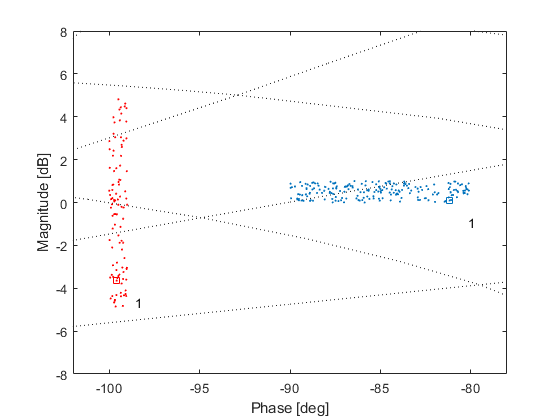

Exmaple: Playing around with templates
Contents
The qtpl class offers conviniante methods for ajustions and modifications. This example covers most of them. Let us start by generating two random templates:
template1 = -90 + 10*rand(200,1) + 1i*rand(200,1); template2 = -100 - 5i + 1*rand(100,1) + 10i*rand(100,1); tpl1 = qtpl(1,template1); % assign to frequency w=1 rad/s tpl2 = qtpl(1,template2); % assign to frequency w=1 rad/s tpl1.show; tpl2.show(gcf,'color',[1 0 0]) axis([-102 -78 -8 8]); ngrid;
Observe that since no uncetrain parameters where specified, these filed assumes the default values, e.g.
disp(tpl1.parNames) disp(tpl1.parameters)
index (def)
Columns 1 through 13
1 2 3 4 5 6 7 8 9 10 11 12 13
Columns 14 through 26
14 15 16 17 18 19 20 21 22 23 24 25 26
Columns 27 through 39
...Tempaltes can be manipulated using two principle mechanisms:
- Complex plane (Nyquist) operations are facilitated by cpop
- Nichols plane operations are facilitated by tplop
Complex Plane Operations
The qtpl method CPOP( A,B,OPR ) performs the operation described by OPR between objects A and B, where at least one of them is a qtpl object. useful operations include product ('*') and division ('/').
Example 1: Multiply the template tpl1 by 2.
tpl3 = tplop(tpl1,2,'*'); tpl3.show(gcf,'color',[0 1 0])